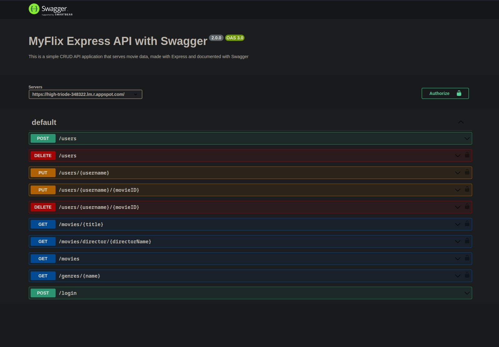

Work
Projects

PokeDex App
This is a JavaScript application that fetches data from an external API

MyFlix API
This is the server-side component of a movie database web application.

MyFlix Client
This is the server-side component of a movie database web application.

Meet App
This is a meet app, displaying a list of upcoming events for a city and time of the events.
Job experience
Devexperts
Technical Support Engineer
Mar 2021 - Apr 2023 (2 years 2 months)
- Supported a financial exchange system handling incident reporting, service requests, provided developers with client feedback and contributed to knowledge base articles, all using Atlassian Software Suite.
- Analyze app logs using Kibana Elastic Search and server's configuration files in incidents, document the problem, troubleshooting steps and if needed escalate to appropriate teams.
- Configure and monitor apps and app servers through Zabbix monitoring system.
- Used Version Control Systems like GIT and source code management client tools like Stash and Git Repo.
- Utilized Ansible and Ansible Tower as configuration management tool to configure, manage and automate middleware application servers tasks.
Amazon
IT Support Associate II
Oct 2018 - Mar 2021 (2 years 6 months)
- Successfully built IT infrastructure and launched, two hybrid cloud sites in West Deptford a locally managed site and in Logan Township a (Juniper automated network architecture) site.
- Provide excellent technical support through analysis and problem resolving of a variety of software, hardware and Network technologies.
- Wrote and execute Change Management documents for troubleshooting, deployment or modifying local network infrastructure.
- Worked in a Linux environment troubleshooting and diagnosing infrastructure and performance issues also used Ansible for managing Linux deployment and configuration.
IT Support Associate I
Jan 2016 - Oct 2018 (2 years 10 months)
Education
Rowan College at Burlington County
Associate of Science - AS, Computer Science
2014 - 2017
Certifications
AWS Certified SysOps Administrator – Associate - Amazon Web Services (AWS)
Issued Dec 2020 - Expires Dec 2023